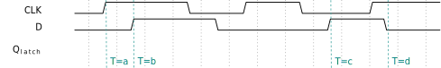
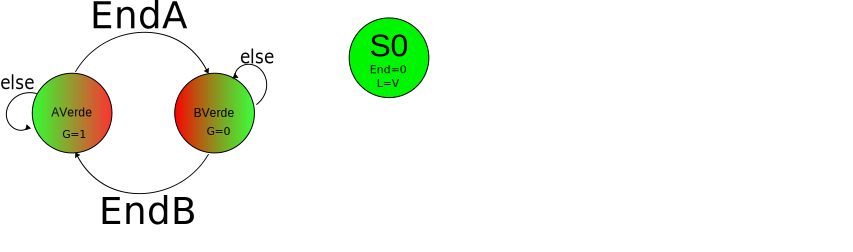
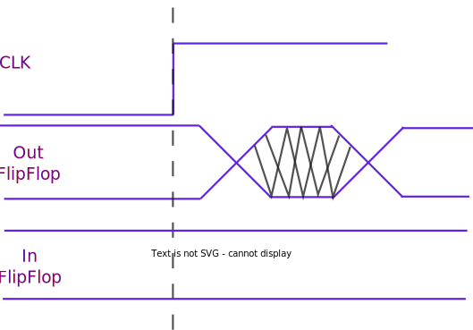
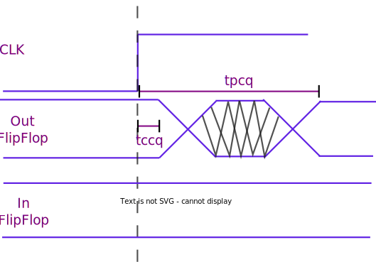
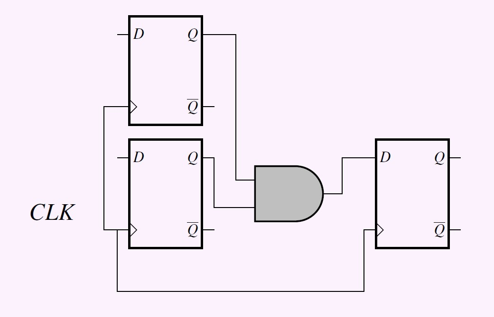
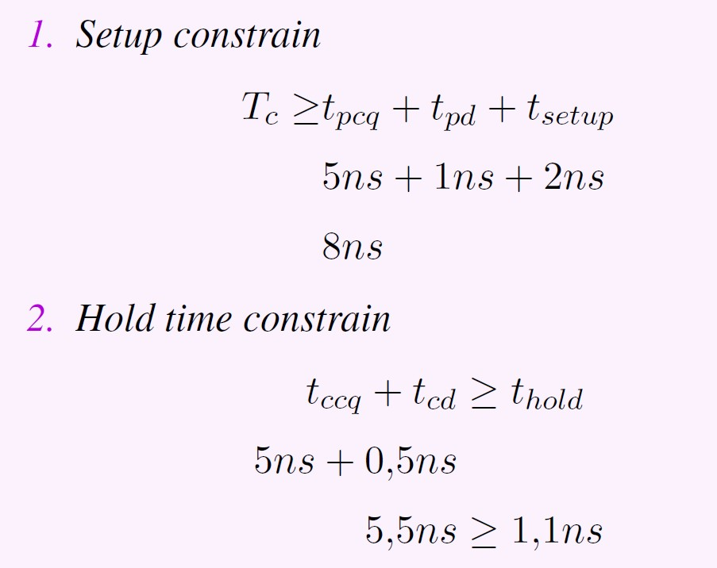

ELO211 Sistemas Digitales
Circuitos secuenciales
Marie González-Inostroza

Comenten entre los grupos
¿De qué trata su proyecto?
¿Cuáles son los principales bloques y cómo funcionan?
¿Qué bloques aún no pueden resolver?
Anoten sus principales conclusiones
Circuito secuencial
Sus salidas dependen de la entrada actual y las anteriores.
Por lo tanto, tienen memoria
¿Cómo implementar una memoria?
Latches
Cambia según sus señales de control
Flip-flops
Cambia según sus señales de control en los cambios del reloj
Latches tipo SR


Latches tipo D
Flip-Flop D

Clock
Periodo (T): duración de un ciclo del clock
frecuencia (f): cantidad de ciclos por unidad de tiempo f=1/T

Registros
Cuando queremos guardar información de largo N, usamos un grupo de N flipflops que usan el mismo clock
¿Qué entradas debe tener un latch SR para conservar su estado?
a) S=0, R=0
b) S=0, R=1
c) S=1, R=0
d) S=1, R=1
¿En qué tiempo NO cambia la salida del latch tipo D?
¿En qué tiempo cambia la salida del Flip-flop tipo D?
FSMs: Finite State Machines
Máquinas de estado finito
Estrategia para definir circuitos secuenciales a partir de sus estados y transiciones.
FSM
- Tienen entradas, salidas y estados
- Poseen un estado inicial (Ej: IDLE)
- Debemos definir las transiciones entre estados
- En cada ciclo del clock avanza al estado siguiente
Caso de estudio: Semáforo inteligente
Un semáforo controla el cruce entre las calles A y B. Para esto, cuenta con los sensores Ta y Tb que indican con un 1 cuando pasa un auto. El semáforo permanecerá en verde para una calle hasta que no pase ningún auto por ella.

En grupos, realicen un diagrama de estados para el problema de la estación asignada usando el modelo de Moore
Avancen una estación de trabajo hacia la derecha
En grupos, realicen un diagrama de estados para el problema dado usando el modelo de Mealy
Caso 1
Una radio tiene control de volumen con 4 niveles. Los usuarios pueden subir el volumen apretando un botón con signo + o bajarlo con un botón con signo -. Diseñe una FSM cuya salida sea el nivel de volumen seteado por el usuario.
Caso 2
Una máquina expendedora sólo recibe monedas de 500 pesos. Al recibir una nueva moneda, el sensor S toma el valor 1 por un ciclo del reloj. Diseñe una FSM cuya salida indique el dinero acumulado. Cuando el usuario quiera pagar, apretará el botón P y su conteo debe volver a 0.
Caso 3
Una puerta del metro es controlada mediante 2 botones: uno para cerrar y uno para abrir. Para poder realizar el movimiento, se cuenta con un motor que recibe dos señales: una indica el sentido de giro (hacia un lado cierra y hacia el otro abre) y la otra indica si gira o no. Realice una FSM capaz de realizar dicho control.
¿Cómo implementar la FSM como circuito?
Ejemplo: opciones de codificación de estados
| State | C. binario | C. Gray | C. One-Hot | C. One-Cold |
|---|---|---|---|---|
| S0 | 00 | 00 | 0001 |
1110 |
| S1 | 01 | 01 | 0010 |
1101 |
| S2 | 10 |
11 | 0100 |
1011 |
| S3 | 11 | 10 | 1000 | 0111 |
Se debe elegir una estrategia de codificación
Ejemplo tabla de salidas
| State | LA | LB |
|---|---|---|
| S0 | 001 | 100 |
| S1 | 010 | 100 |
| S2 | 100 | 001 |
| S3 | 100 | 010 |
Ejemplo tabla de transición de estados
| S(t) | In(TATB) | S(t+1) |
|---|---|---|
| S0 | 1X | S0 |
| S0 | 0X | S1 |
| S1 | XX | S2 |
| S2 | X1 | S2 |
| S2 | X0 | S3 |
| S3 | XX | S0 |
Realicen el circuito para implementar una de las FSM
ELO211 Sistemas Digitales
Circuitos secuenciales
Marie González-Inostroza
Circuito secuencial con Máquina de Moore

Circuito secuencial con Máquina de Mealy
Tablas de estados, transiciones y salidas máquina de Moore
| S(t) | Cod. |
|---|---|
| S0 | 00 |
| S1 | 01 |
| S2 | 10 |
| S3 | 11 |
| State | LA | LB |
|---|---|---|
| S0 | 001 | 100 |
| S1 | 010 | 100 |
| S2 | 100 | 001 |
| S3 | 100 | 010 |
| S(t) | In(TATB) | S(t+1) |
|---|---|---|
| S0 | 1X | S0 |
| S0 | 0X | S1 |
| S1 | XX | S2 |
| S2 | X1 | S2 |
| S2 | X0 | S3 |
| S3 | XX | S0 |
Tabla de estados y transiciones máquina de Moore

| St | In(Ta,Tb) |
St+1 | Out(La,Lb) |
|---|---|---|---|
| 00 | 0X |
01 |
001100 |
| 00 | 1X | 00 | 001100 |
| 01 | XX | 10 |
010100 |
| 10 | X0 | 11 |
100001 |
| 10 |
X1 | 10 |
100001 |
| 11 | XX | 00 | 100010 |
Tabla de estados y transiciones máquina de Mealy

| St | In(Ta,Tb) |
St+1 | Out(La,Lb) |
|---|---|---|---|
| 0 | 0X |
1 |
010100 |
| 0 | 1X | 0 | 001100 |
| 1 | X0 |
0 |
100001 |
| 1 | X1 | 1 | 100010 |
Ej: Síntesis de Máquina de Mealy
| St | In(Ta,Tb) |
St+1 | Out(La,Lb) |
|---|---|---|---|
| 0 | 0X |
1 |
010100 |
| 0 | 1X | 0 | 001100 |
| 1 | X0 |
0 |
100001 |
| 1 | X1 | 1 | 100010 |
Ej: Síntesis de Máquina de Mealy
| St | In(Ta,Tb) |
St+1 | Out(La,Lb) |
|---|---|---|---|
| 0 | 0X |
1 |
010100 |
| 0 | 1X | 0 | 001100 |
| 1 | X0 |
0 |
100001 |
| 1 | X1 | 1 | 100010 |
Ej: Síntesis de Máquina de Mealy
| St | In(Ta,Tb) |
St+1 | Out(La,Lb) |
|---|---|---|---|
| 0 | 0X |
1 |
010100 |
| 0 | 1X | 0 | 001100 |
| 1 | X0 |
0 |
100001 |
| 1 | X1 | 1 | 100010 |
Caso 1
Una radio tiene control de volumen con 4 niveles. Los usuarios pueden subir el volumen apretando un botón con signo + o bajarlo con un botón con signo -. Diseñe una FSM cuya salida sea el nivel de volumen seteado por el usuario.
Caso 2
Una máquina expendedora sólo recibe monedas de 500 pesos. Al recibir una nueva moneda, el sensor S toma el valor 1 por un ciclo del reloj. Diseñe una FSM cuya salida indique el dinero acumulado. Cuando el usuario quiera pagar, apretará el botón P y su conteo debe volver a 0.
Caso 3
Una puerta del metro es controlada mediante 2 botones: uno para cerrar y uno para abrir. Para poder realizar el movimiento, se cuenta con un motor que recibe dos señales: una indica el sentido de giro (hacia un lado cierra y hacia el otro abre) y la otra indica si gira o no. Realice una FSM capaz de realizar dicho control.
En base a las máquinas de Mealy de la clase anterior, diseñen un circuito
Flip-Flop JK

ELO211 Sistemas Digitales
Circuitos secuenciales
Marie González-Inostroza
Caso de estudio: Semáforo inteligente modificado
Después de unos meses de evaluación del circuito implementado, en base a su máquina de Moore, la Municipalidad le ha pedido modificar su máquina. En concreto, quieren que los semáforos estén al menos 4 ciclos reloj en cada verde y 2 en amarillo y que no se salte ningún color.
Propuesta de solución con una máquina

Propuesta de solución factorizada

Propuesta de solución factorizada
Propuesta de solución factorizada

Propuesta de solución factorizada

Propuesta de solución factorizada

Propuesta de solución factorizada opción 2

Caso de análisis
Se le ha pedido diseñar una FSM factorizada capaz de controlar una cámara digital. Esta debe encargarse del sistema central de la cámara y enviar señales a los distintos sistemas. La única entrada de control de la cámara es el botón de toma de imágenes. Una vez que se aprieta el botón, debe iniciarse el sistema de auto-enfoque, que permite calcular la distancia a la que está el objeto central. Si se mantiene presionado el botón luego de terminado el enfoque, se debe iniciar el proceso de toma de imagen. La toma de imagen consiste en tomar una imagen durante el tiempo de obturación (varios ciclos de reloj). Una vez concluida la toma de imagen, se debe iniciar el proceso de guardado. Durante este tiempo, la pantalla queda en negro. Luego de terminar la toma de imagen, la cámara está en modo espera. En este caso, la pantalla debe estar activa mostrando la imagen de previsualización. Al concluir, debe sonar un bip! Por 6 tiempos de reloj.
Restricciones temporales para circuitos secuenciales

Restricciones temporales para circuitos secuenciales

Restricciones temporales para circuitos secuenciales
Restricciones temporales para circuitos secuenciales

Restricciones temporales para circuitos secuenciales
Restricciones temporales para circuitos secuenciales

Restricciones temporales para circuitos secuenciales


ELO211 Sistemas Digitales
Circuitos secuenciales
Marie González-Inostroza
Gráfico temporal entre sistemas secuenciales
Gráfico temporal entre sistemas secuenciales
Restricciones temporales para circuitos secuenciales

Restricción tiempo de setup
\[\begin{equation*}
T_c \geq t_{pcq} + t_{pd} + t_{setup}
\end{equation*}\]

Restricción tiempo de hold
\[\begin{equation*}
t_{ccq} + t_{cd} \geq t_{hold}
\end{equation*}\]


Restricción tiempo de setup \[\begin{equation*} T_c \geq t_{pcq} + t_{pd} + t_{setup} \end{equation*}\]
Restricción tiempo de hold \[\begin{equation*} t_{ccq} + t_{cd} \geq t_{hold} \end{equation*}\]